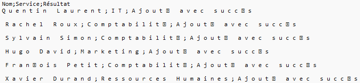

Projet Powershell: Importation d'utilisateurs via CSV dans l'Active directory
Objectif
Dans le cadre de ce projet, j’ai mis en place une infrastructure Active Directory sur une machine virtuelle équipée de Windows Server 2025. Après avoir configuré le système, j’ai ajouté le rôle Active Directory Domain Services (ADDS) et promu le serveur en tant que contrôleur de domaine, en créant le domaine entreprise.fr.
L’objectif principal du projet était d’automatiser l’importation d’utilisateurs en masse dans l’Active Directory à partir d’un fichier CSV. Pour cela, j’ai développé un script PowerShell à l’aide de PowerShell ISE, l’éditeur de script intégré à Windows. Cet environnement m’a permis d’écrire, tester et corriger le script.
Le script lit les données du fichier CSV sans en modifier la structure, et génère automatiquement les attributs nécessaires pour chaque utilisateur :
- L’adresse e-mail au format p.nom@entreprise.fr ;
- Le nom d’utilisateur (SamAccountName) au format p.nom ;
- L’unité d’organisation (OU) cible, déterminée par le service de l’utilisateur, dans l’arborescence OU=Entreprise,DC=entreprise,DC=FR.
Chaque utilisateur est ensuite ajouté dans Active Directory avec les bons attributs, tout en respectant les contraintes de sécurité. Le script inclut une détection automatique des doublons d'identifiants UPN et SamAccountName, et adapte automatiquement les valeurs si nécessaire. Il demande à l'administrateur de spécifier le chemin du fichier CSV au lancement, ce qui le rend plus souple à réutiliser dans différents contextes. Une vérification est également effectuée sur le nom de l'unité d'organisation (OU) pour s'assurer qu'elle existe bien dans l'annuaire avant toute tentative de création de compte.
Enfin, le script produit un fichier journal (log) listant tous les utilisateurs traités, avec un statut de réussite ou d’échec pour chaque création. Ce log permet une traçabilité complète de l’importation, facilitant les vérifications et le support.
Ce projet m’a permis de mettre en œuvre mes compétences en administration système, en scripting PowerShell avancé et en gestion d'une infrastructure Active Directory.
Étapes du projet
-
Installation de la machine virtuelle Windows Server 2016
Configuration de base de la VM (mémoire, disque, réseau, etc.) -
Ajout du rôle ADDS et promotion du serveur en contrôleur de
domaine
Installation via le Gestionnaire de serveur
Création du domaine entreprise.fr
[Survoler pour voir l'image] -
Structure de l’Active Directory
Création des OU selon les services dans OU=Entreprise
[Survoler pour voir l'image] -
Écriture du script PowerShell dans PowerShell ISE
Utilisation de l’éditeur intégré à Windows pour développer le script
Lecture du fichier CSV et génération des attributs utilisateurs
Vérification de l'existence de l'OU ciblée avant chaque création
Ajout dans AD avec gestion automatique des doublons
[Survoler pour voir l'image]
-
Exécution du script et importation des utilisateurs
Lancement du script après saisie du chemin du fichier CSV
Vérification de la création des comptes
[Survoler pour voir l'image] -
Vérification dans Active Directory
Contrôle visuel des comptes créés dans les bonnes OU
[Survoler pour voir l'image] -
Génération du rapport final
Affichage ou export des résultats de l’importation dans un fichier log CSV
[Survoler pour voir l'image] 